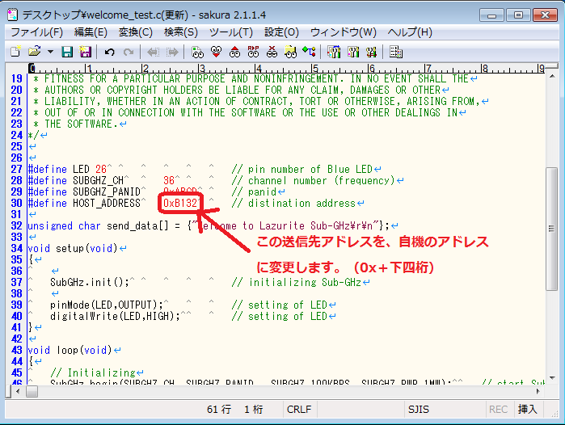
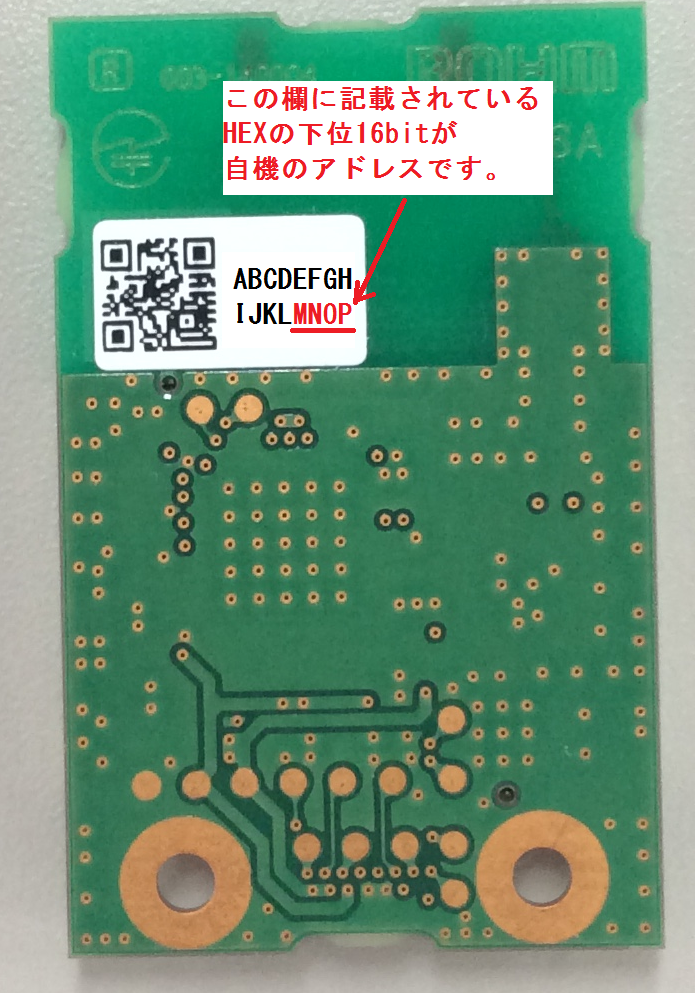

本ページでは、Lazurite Pi Gatewayの立ち上げ方法と起動方法について説明します。
１－１．LazuriteのTOPページ上部のダウンロードメニューをクリックします。

１－２．お持ちのRaspberry Pi のタイプにあわせて選び、イメージファイルをダウンロードしてください。

１－３．ダウンロードしたら、ZIPファイルを解凍し以下のファイルを展開しておきます。

２－１．以下のページを開きます。
２－２．ダウンロード一覧から【Win32DiskImager-0.9.5-install.exe】というファイルを選んで
ダウンロードしてください。

２－３．ダウンロードしたファイルを 【管理者として実行】 します。

２－４．次のセットアップウィザードが出てきますので、画面の通りに進めてください。


２－５．ダウンロードした Win32DiskImager を【管理者として実行】します。
２－６．先ほどLazuriteのHPからダウンロードした 【150714_rpi2.img】ファイルを
ファイルマークから開きます。


２－７．マイクロSDカードに【Write】ボタンからイメージファイルを書き込みます。

３－１. 組み立て前

３－２. 組み立て後
３－３. モニターやキーボード等を接続した後


４－１. Raspberry Piへのログイン
Raspberry Pi login: pi⏎
Password: raspberry⏎ (パスワードは初期設定のままです。ここで入力しても文字は表示されません。）
pi@raspberry~$ のあとに以下のコマンドを実行します。
sudo raspi-config⏎
次の画面が起動したら、1. Expand Filesystemを選択してenterキーを押してください。
その後、画面が切り替わるので再起動をしてください
自分で再起動をする方法は次の通りです。
再起動: sudo rebood⏎
シャットダウン: sudo shutdown -h now⏎
再起動をするには、シャットダウン後に電源を抜き、もう一度投入してください。
以上で準備は完了です。
５－１. Lazurite Sub-GHzを起動し、無線モジュールを接続します。

５－２. サンプルプログラムであるWelcome_SubGHzを書き込みます。
まず、サンプルプログラムの受信機のアドレスを自機のアドレスに変更してから書き込みます。
１）ファイル→プロジェクトのサンプル→SubGHz→Welcome_SubGHz をクリックして
「Welcome_SubGHz」のファイルを開きます。

２）出てきたテキストコードをコピーして、テキストエディタに貼り付けます。

３）HOST_ADDRESSのアドレス部分を自機のアドレスに変更します。（0x＋下四桁）

（↑画像は、サクラエディタを使用しています。）

４）変更後、新規フォルダを作成し、デスクトップなどに名前をつけて保存してください。その際、ファイルの拡張子を『.c』としてください。
（LazuriteIDEが自動でいくつかファイルを作成するため、フォルダを作っておいた方が作業がしやすいです。）
５）LazuriteIDEから、保存したファイルを開きます。

ライブラリ内の 「MsTimer2 」※「SPI」「Wire」にチェックを入れてください。
※新しいLazuriteIDEでは不要になりました。
６）プログラムの書き込み化が完了したら送信機の準備も完了です。
『マイコンボードに転送ボタン』をクリックすると、1秒に1回、青色のLEDが点灯し
920MHz帯の周波数で、"Welcome to
Lazurite Sub-GHz"というメッセージを送信します。
１）Raspberry Piを起動して下さい。
２）ドライバを有効化します。
$ sudo insmod ~/driver/sub-ghz/DRV_802154.ko
３）rubyのフォルダに移動し、SerialMonitorを起動します。
$ cd ruby⏎
$ sudo ./SerialMonitor.rb⏎
次のようなメッセージを受信したら成功です。CTRL+c(CTRLボタンを押しながら、cを押す）で
アプリケーションを終了することができます。
sudo
は管理者権限でプログラムを実行するためにつけるコマンドです。
ドライバからデータを読み込むために管理者権限が必要になります。
４）アプリケーションの終了
Ctrl + Cを押してアプリケーションを終了します。
５）ドライバの無効化
Lazurite
Sub-GHzから信号を出した状態のままアプリケーションを終了して放置すると、
メモリーに受信データが保存され続けてしまい、システムが不安定になる可能性があります。
そのため、使用しない場合はドライバーを一度、uninstallしてください。
| ドライバ無効化する方法 | sudo rmmod DRV_802154⏎ |
| ドライバを有効化する方法 | sudo insmod ~/driver/sub-ghz/DRV_802154.ko |

１) Raspberry Pi のデスクトップ画面から[Menu]→[Programming]→[Python3]を開きます。
２）Python Shell の画面が表示されたら、[File]→[Open]から[Python]を開き
[gateway.py]を開きます。

３）[Run]→[Run Module]をクリックすると、Lazurite Gateway
の画面が開くので
[Start]ボタンをクリックすると、Lazurite Sub-GHzから送信された「Welcome
to Lazurite Sub-GHz」
のメッセージが表示されます。
４）プログラムの終了方法
STOPボタンを押した後にアプリケーションを閉じてください。
STOPしないとアプリケーションを終了することが出来ません。
※サンプルプログラムの起動は（Ruby編）（Python編）どちらでもできます。